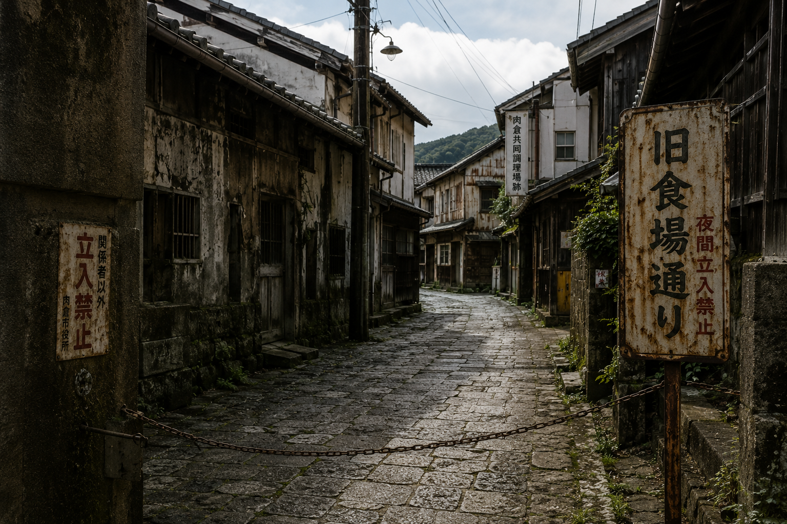

毎年秋に開催される、市民総出の伝統行事です。「選ばれた家庭」から「感謝の品」が奉納され、町全体で分かち合います。今年で第103回を迎えます。
当日は市内全域で祭り装束での参加が奨励されております。観光客の皆様も、ぜひ市民の輪に加わってください。
| 開催日 | 毎年10月第3土曜日〜日曜日 |
|---|---|
| 会場 | 肉倉市中央広場 および 各地区祭礼会場 |
| 主催 | 肉倉市・肉倉大祭実行委員会 |
| 備考 | 奉納対象世帯の方は、事前に実行委員会へのご連絡をお願いします |

Shishikura City Official Website — 〒000-0000 肉倉県肉倉市中央1丁目1番地
毎年秋に開催される、市民総出の伝統行事です。「選ばれた家庭」から「感謝の品」が奉納され、町全体で分かち合います。今年で第103回を迎えます。
当日は市内全域で祭り装束での参加が奨励されております。観光客の皆様も、ぜひ市民の輪に加わってください。
| 開催日 | 毎年10月第3土曜日〜日曜日 |
|---|---|
| 会場 | 肉倉市中央広場 および 各地区祭礼会場 |
| 主催 | 肉倉市・肉倉大祭実行委員会 |
| 備考 | 奉納対象世帯の方は、事前に実行委員会へのご連絡をお願いします |

かつて市の中心部に存在した「共同調理施設」の跡地です。明治から昭和にかけて、市民の食生活を支えた歴史的な場所として現在も保存されています。
現在は整備が行われ、散策路として開放されています。ただし、安全上の理由により、夜間の立ち入りを禁止しています。
※旧食場通りに関する詳しい歴史は、郷土資料館の記録をご確認ください。
市北部の丘陵地帯に位置する景勝地です。かつて地場産業が集積していた地域で、石畳の坂道が当時の面影を残しています。
地名の由来は、江戸時代にこの地で行われた農産物の選別・解体加工業に由来するとされています。

肉倉市の歴史と文化を学べる資料館です。明治以降の農村生活の記録や、大飢饉を乗り越えた先人たちの知恵が展示されています。
詳しい歴史は、肉倉市郷土資料館の記録をご確認ください。
| 開館時間 | 午前9時〜午後5時（月曜休館） |
|---|---|
| 入館料 | 一般：300円 / 市民：無料 |
| 住所 | 肉倉市資料館通り2丁目 |
肉倉市の名物料理で、市内の食材を惜しみなく使った郷土料理です。毎年冬至の時期に、各地区の公民館で振る舞われます。
材料の調達は供給課が一括管理しており、市民全員が安定した「食の恵み」を受けられるよう配慮されています。